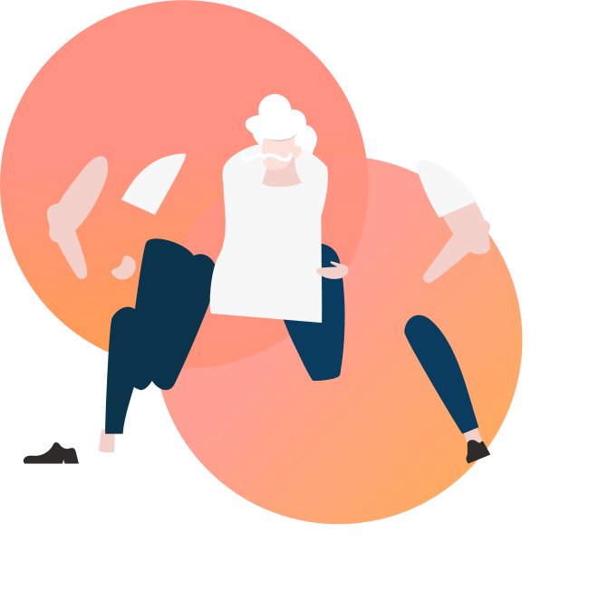

O Processo de produção em uma roupa acontece em várias etapas a partir da fibra que você escolheu :)
Vamos conhecer?

A Produção do Algodão
Após a colheita, é feito a separação da fibra e semente, em seguida é iniciada a etapa spinning onde são feitos os fios a partir da fibra para transformá-lo em tecido. Os tecidos passam por alvejantes para ficarem mais claros. Por fim se necessário é tingido com corantes.
O Processo de produção em uma roupa acontece em várias etapas a partir da fibra que você escolheu :)